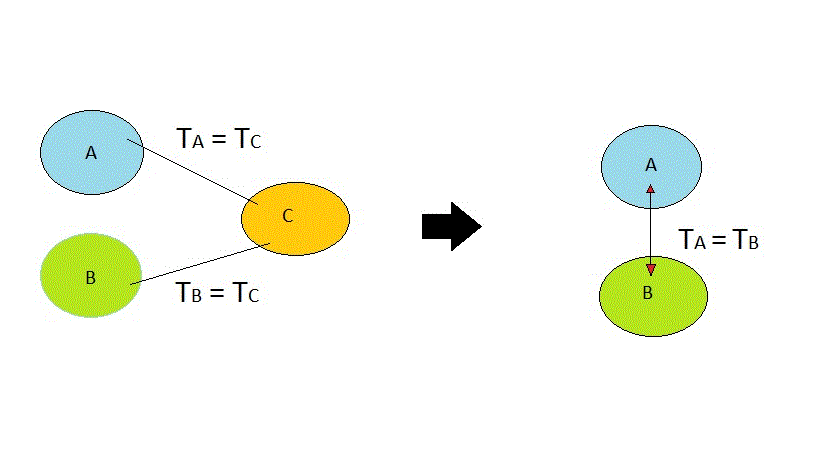
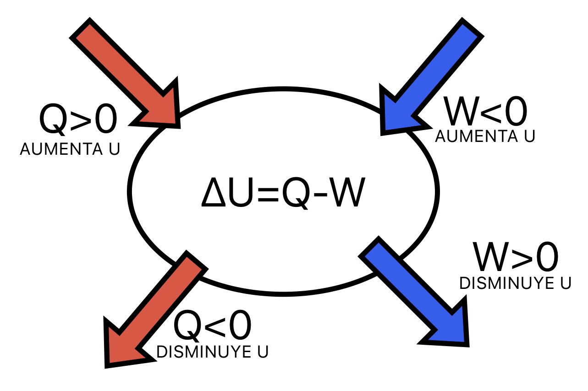
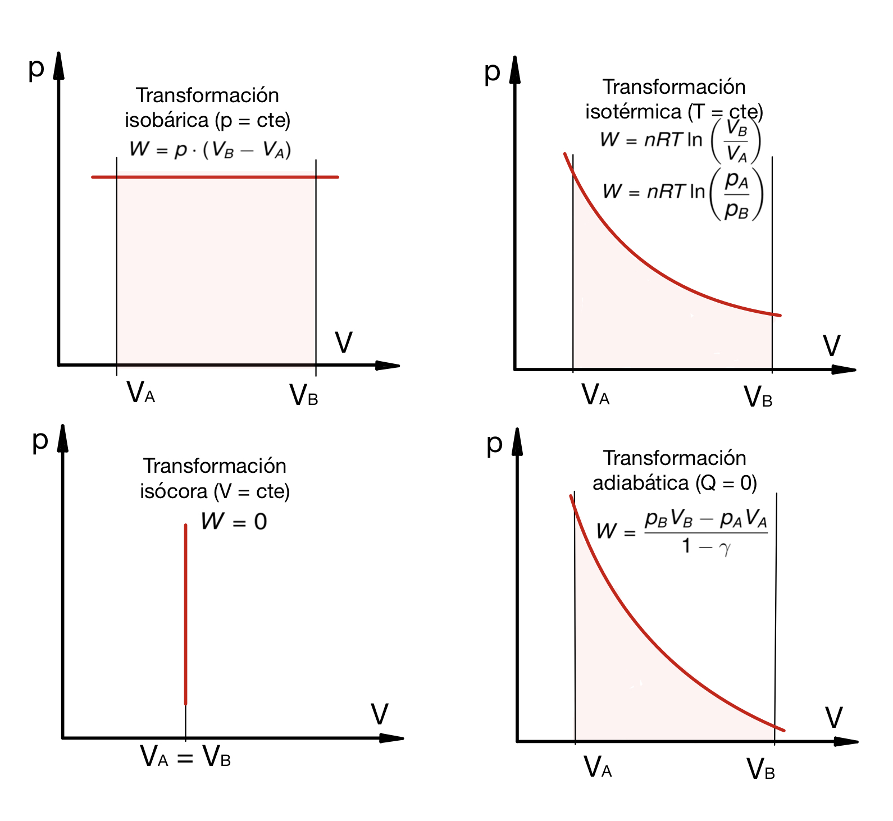
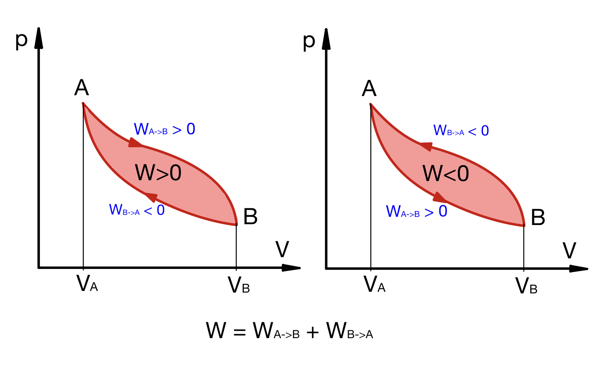
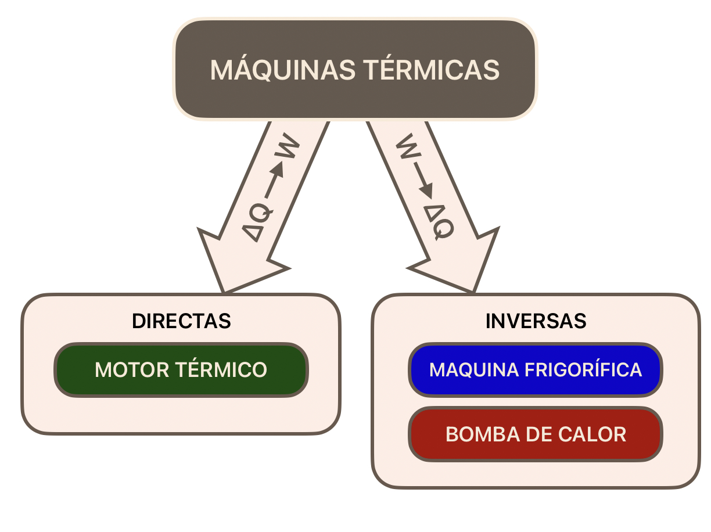
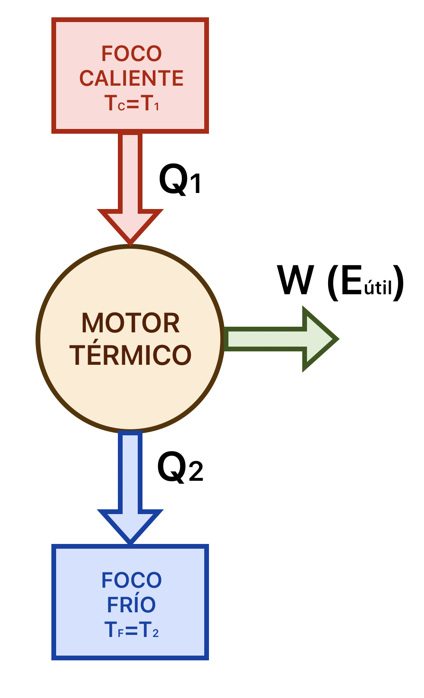
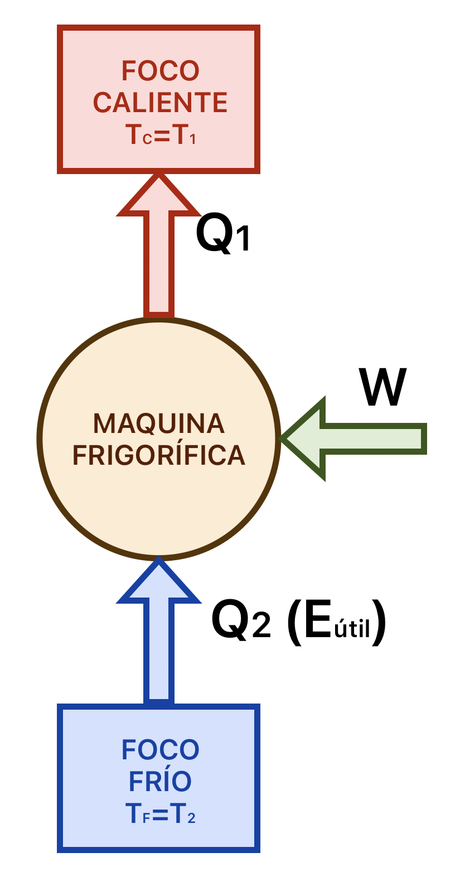
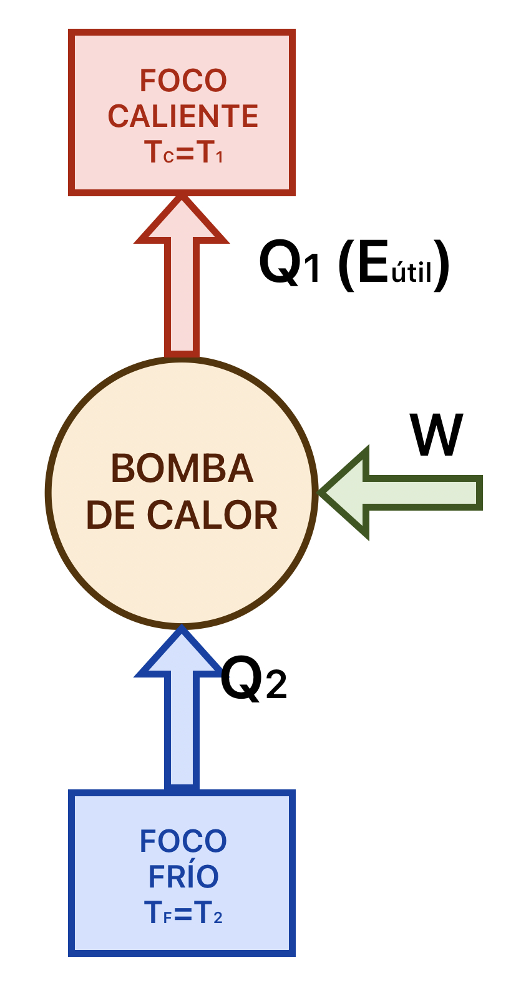
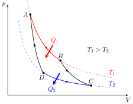

Conceptos básicos
La termodinámica es la parte de la Física que estudia la relación existente entre el calor y el trabajo. Viene bien aclarar el significado de algunas magnitudes fundamentales antes de meternos en el estudio de la Termodinámica:
Energía interna (U)
La energía interna es la energía que tiene un sistema debida al movimiento constante de las partículas que lo forman (átomos o moléculas). Es, por lo tanto, un tipo de energía cinética debida a la "vibración" microscópica de las partículas de un cuerpo, que se mueven aunque el cuerpo esté en reposo.
Temperatura (T)
Una forma de medir la energía interna de un cuerpo es mediante la magnitud temperatura, que representa la energía cinética media de las partículas de un sistema.
La temperatura se mide en kelvins (K) en el SI. Al medir la temperatura la energía cinética de las partículas, un sistema cuyas partículas estuvieran completamente inmóviles tendría una temperatura de 0 K. Sin embargo, esto es imposible porque el Principio de Incertidumbre hace que siempre haya una fluctuación en las partículas que hace imposible que permanezcan inmóviles en un punto determinado del espacio, por lo que es imposible alcanzar una temperatura de 0 K en el mundo real.
Habitualmente se utilizan los grados celsius (ºC) para medir temperaturas. Un grado celsius es equivalente a un kelvin, pero ambas escalas de unidades tienen un cero de temperaturas distinto. Por lo tanto:
- Si se calcula una temperatura absoluta en diferentes escalas, hay que hacer una traslación: T(K) = T(ºC) + 273,15.
- Si calculamos un incremento de temperaturas, es indiferente hacerlo en K o en ºC pues el valor numérico es el mismo: ΔT(K) = ΔT(ºC)
Calor (Q)
La energía interna puede intercambiarse entre cuerpos y ese tránsito de energía entre cuerpos es lo que denominamos calor. Por lo tanto, el calor es la energía que cede o absorbe un cuerpo cuando está en contacto con otro.
El calor puede expresarse en julios (J), aunque es habitual encontrarlo expresado en calorías (cal). Recuerda que 1 cal = 4,18 J.
Combinando estas tres magnitudes, podemos decir para fijar ideas que:
La energía interna se transmite, en forma de calor, desde los cuerpos de mayor temperatura hacia los de menor.
Sistemas termodinámicos
A la hora de analizar el comportamiento termodinámico de los cuerpos se definen sistemas termodinámicos, en los que se incluyen los cuerpos objeto de estudio y se establecen las fronteras o límites con el ambiente y los alrededores. Así, los sistemas termodinámicos pueden ser:
- Sistemas abiertos. En ellos se permite el intercambio de materia y energía con el ambiente. Por ejemplo, en una caldera se quema combustible (materia) y se intercambia calor (energía).
- Sistemas cerrados. En ellos sólo es posible el intercambio de energía con el exterior. Por ejemplo, en una botella de agua muy fría no se intercambia materia, puesto que está cerrada, pero sí calor, ya que se va calentando con el tiempo.
- Sistemas aislados. En ellos no se permite el intercambio de materia ni energía con el exterior. El único sistema realmente aislado que existe es el universo, aunque algunos sistemas se pueden considerar aislados en estudios puntuales.
Variables termodinámicas. Ecuaciones de estado
Una vez definido un sistema termodinámico y sus límites, podemos establecer cuál es su estado dando valores a sus diferentes propiedades.
Las principales propiedades que describen el estado de un sistema termodinámico son la masa, la presión, el volumen y la temperatura. Estas propiedades se denominan variables de estado ya que sus valores determinan el estado en el que se encuentra el sistema.
Una función de estado es una propiedad de un sistema termodinámico que depende sólo del estado del sistema, y no de la forma en que el sistema llegó a dicho estado. Por ejemplo, la energía interna y la entropía son funciones de estado.
El calor y el trabajo no son funciones de estado, ya que su valor depende del tipo de transformación que experimenta un sistema desde su estado inicial a su estado final.
Las funciones de estado pueden verse como propiedades del sistema, mientras que las funciones que no son de estado representan procesos en los que las funciones de estado varían.
Una ecuación de estado es una ecuación que relaciona, para un sistema en equilibrio termodinámico, las variables de estado que lo describen.
No existe una única ecuación de estado que describa el comportamiento de todas las sustancias para todas las condiciones de presión y temperatura. La ecuación de estado más sencilla es aquella que describe el comportamiento de un gas cuando éste se encuentra a una presión baja y a una temperatura alta. En estas condiciones la densidad del gas es muy baja, por lo que pueden hacerse las siguientes aproximaciones:
- no hay interacciones entre las moléculas del gas,
- el volumen de las moléculas es nulo.
La ecuación de estado que describe un gas en estas condiciones se llama ecuación de estado de un gas ideal y es la siguiente:
\[p\cdot V=n\cdot R\cdot T \quad \text{donde} \left\{\begin{array}{lll}n: \text{número de moles} \\ R: \text{0,082}\ \frac{\text{atm}\cdot\text{l}}{\text{K}\cdot\text{mol}}\\R: \text{8,314}\ \frac{\text{J}}{\text{K}\cdot\text{mol}}\end{array}\right.\]
Calentamiento de fluidos. Calores específicos.
Recuerda también la fórmula que permite calcular el calor absorbido por una sustancia:
\[Q=m\cdot c\cdot \Delta T\]
El valor c era el calor específico de la sustancia, que era diferente para cada sustancia que pudiéramos encontrar. En el caso de los gases, el calor absorbido es además diferente si el proceso se realiza a presión constante o a volumen constante, teniéndose dos valores distintos: el calor específico a presión constante (cp) y el calor específico a volumen constante (cv). Tendremos, por tanto, dos fórmulas para calcular el calor absorbido por el gas, según sea el proceso:
\[\left\{\begin{array}{ll}Q_{v}=n\cdot c_{v}\cdot \Delta T \quad \text{a volumen constante} \\ \\Q_{p}=n\cdot c_{p}\cdot \Delta T \quad \text{a presión constante}\end{array}\right.\]
Fíjate que en este caso no ponemos la masa (m) sino el número de moles (n), mucho más utilizado al tratar con gases. Por tanto, las unidades de los calores específicos a presión y volumen constantes serán \( \frac{\text{cal}}{\text{ºC}\cdot\text{mol}} \).
Como la energía puede darse en otras unidades, será común encontrar valores de cp y cv expresados en \(\frac{\text{J}}{\text{K}\cdot\text{mol}} \) e, incluso, en \(\frac{\text{atm}\cdot\text{l}}{\text{K}\cdot\text{mol}} \).
En el caso de que estemos ante un gas ideal, se cumple la siguiente igualdad:
\[R=c_{p} - c_{v}\]
Siendo R la constante de la ecuación de estado de los gases ideales.
Principios de la Termodinámica
En Termodinámica existen cuatro principios, que son leyes fundamentales de la física, y que nos permiten, entre otras cosas:
- Definir magnitudes como la temperatura, la energía o la entropía
- Describir cómo se comportan los sistemas termodinámicos bajo ciertas circunstancias
- Prohibir ciertos fenómenos, como el móvil perpetuo.
Los cuatro principios de la Termodinámica son los siguientes:
Principio cero
Si dos sistemas (A y B) están en equilibrio térmico de manera independiente con un tercer sistema (C), entonces deben estar en equilibrio térmico entre sí. Este precepto nos ayuda a definir la temperatura.

En palabras simples, el principio dice que si se pone un objeto con cierta temperatura en contacto con otro a una temperatura distinta, ambos intercambian calor hasta que sus temperaturas se igualan.
Primer principio
Un sistema cerrado puede intercambiar energía con su entorno en forma de trabajo y de calor, acumulando energía en forma de energía interna.
Visto de otra forma, este principio permite definir el calor como la energía necesaria que debe intercambiar el sistema para compensar las diferencias entre trabajo y energía interna. En palabras simples: la energía total del universo se mantiene constante. No se crea ni se destruye, solo se transforma.
La expresión matemática del primer principio de la termodinámica aplicada a un sistema cerrado es la siguiente:
\[\Delta U=Q-W\]
Donde:
- U: energía interna del sistema (Δ indica su variación)
- Q: calor absorbido por el sistema (si es cedido, tendrá signo negativo)
- W: trabajo realizado por el sistema (si el trabajo lo hacemos desde el exterior sobre el sistema, tendrá signo negativo)
Hay que tener en cuenta el criterio de signos que seguimos, que es el tradicional. Existe otro criterio (IUPAC) más moderno, que considera el trabajo negativo cuando lo realiza el sistema, al revés que nosotros. En ingeniería mecánica se sigue utilizando el criterio tradicional, que es perfectamente válido, y por eso es el que estudiaremos nosotros. Si en otra materia te enseñan el primer principio con la fórmula \(\Delta U=Q+W\), significa que están utilizando el criterio IUPAC.
Nuestro criterio de signos (el tradicional) se puede ver directamente en esta figura:

Lógicamente, los flujos energéticos que salen del sistema disminuyen su energía interna, mientras que los que entran al sistema la aumentan. Para que la fórmula sea coherente, tenemos que tomar esos signos.
Segundo principio
En un sistema aislado la entropía nunca puede disminuir. Existen varios enunciados equivalentes para este principio, pero hay dos que utilizaremos nosotros implícitamente en esta unidad y que son:
- Enunciado de Clausius:es imposible que una máquina autónoma, sin ayuda de algún agente externo, transfiera calor de un cuerpo a otro más caliente.
- Enunciado de Kelvin-Planck: no es posible un proceso cuyo único resultado sea la absorción de calor procedente de un foco y la conversión íntegra de este calor en trabajo.
El segundo principio de la termodinámica establece un comportamiento espontáneo de los sistemas con el paso del tiempo y la irreversibilidad de los procesos. Es el único principio físico que establece una diferencia en el flujo del tiempo y que nos indica cómo evolucionará espontáneamente un sistema.
Para comprender algo mejor en qué consiste el concepto llamado entropía que se define para este principio, puedes ver este vídeo:
Tercer principio
También conocido como postulado de Nernst, este principio afirma que no se puede alcanzar el cero absoluto de temperatura en un número finito de etapas. Puede definirse como:
- Al llegar al cero absoluto, 0 K, cualquier proceso de un sistema físico se detiene.
- Al llegar al cero absoluto la entropía alcanza un valor mínimo y acelerado.
Este tercer principio no es necesario para lo que estudiaremos en este tema (y, de hecho, no es necesario en la termodinámica clásica), por lo que solo lo pongo aquí para completar la sección, pero no lo tendremos en cuenta en lo sucesivo.
Un sistema cerrado es uno que no tiene intercambio de masa con el resto del universo termodinámico.
En termodinámica, el concepto de irreversibilidad se aplica a aquellos procesos que, como la entropía, no son reversibles en el tiempo. Desde esta perspectiva termodinámica, todos los procesos naturales son irreversibles.
En este vídeo tienes un resumen muy bueno de los cuatro principios de la termodinámica:
Transformaciones termodinámicas
Aprovechamos para recordar las transformaciones termodinámicas que ya conoces:

Transformaciones cíclicas
En las máquinas térmicas los sistemas evolucionan de forma que, partiendo de un estado inicial, vuelven a él mediante transformaciones cerradas. Es decir, el punto de inicio y fin tiene las mismas condiciones de presión, volumen y temperatura.
Esto implica que la variación de energía interna del sistema en un ciclo completo es nula, pues el sistema vuelve al mismo estado inicial y recordamos que la energía interna es función de estado.
Podemos imaginar una transformación cíclica como la suma de dos procesos. Uno desde el estado inicial (A) a otro cualquiera de la transformación (B) y el otro proceso la vuelta desde el B hacia el A. El trabajo total realizado en la transformación será la suma de los trabajos de ida y de vuelta. En los siguientes diagramas puedes ver los dos casos posibles que nos podemos encontrar: que la transformación tenga un recorrido horario en un diagrama p-V o que lo tenga antihorario:

Con los estados A y B que hemos tomado, el trabajo de ida será siempre positivo y el de vuelta será siempre negativo. Como el trabajo es el área bajo la curva en el diagrama p-V, el trabajo neto del ciclo será el área encerrada en la curva del ciclo (las áreas entre la curva inferior y el eje de abscisas se cancelan)- En el primer caso (recorrido horario), el trabajo de ida (positivo) es mayor que el de vuelta (negativo), por lo que el trabajo total es positivo. Estaríamos ante una máquina que realiza trabajo o, lo que es lo mismo, una máquina térmica directa o motor térmico.
- En el segundo caso (recorrido antihorario), el trabajo de ida (positivo) es menor que el de vuelta (negativo), por lo que el trabajo total es negativo. Estaríamos ante una máquina que necesita recibir trabajo para funcionar o, lo que es lo mismo, una máquina térmica inversa o máquina frigorífica.
Máquinas térmicas. Clasificación.
Una máquina térmica es un conjunto de elementos que permite:
- obtener un trabajo mecánico (W) útil a partir de un desnivel térmico (ΔQ) natural o artificial; o bien,
- obtener un desnivel térmico (ΔQ) entre dos focos a partir de un trabajo mecánico externo (W).
Estas dos formas de trabajar nos clasifican las máquinas térmicas en máquinas térmicas directas (motores térmicos) o inversas. A su vez, las máquinas térmicas inversas pueden ser de dos tipos, dependiendo de si lo que queremos con el desnivel térmico es enfriar un foco frío (máquina frigorífica) o calentar un foco caliente (bomba de calor).

En las secciones 2 y 3 veremos ejemplos concretos de estas máquinas y cómo están construidas, pero ahora las analizaremos desde un punto de vista teórico pues su comportamiento termodinámico es el mismo:
Motor térmico

Ya hemos dicho que el motor térmico es una máquina que convierte un desnivel térmico en trabajo mecánico. El desnivel térmico viene dado por dos focos a diferentes temperaturas, que son:
- Un foco caliente, a temperatura T1, que suele estar aportado por la combustión de un combustible.
- Un foco frío, a temperatura T2, que suele ser el ambiente que rodea al motor.
El motor obtiene calor del foco caliente y produce el trabajo mecánico, cediendo calor al foco frío (recuerda que, según el enunciado de Kelvin-Planck del segundo principio de la termodinámica, no podemos convertir íntegramente el calor del foco caliente en trabajo sin ceder nada al foco frío). Esquemáticamente, el funcionamiento de un motor térmico es el de la figura de la derecha.
Vamos a aplicar el primer principio de la termodinámica a este motor. Como es una máquina cíclica, sabemos que \(\Delta U=0\), por lo tanto, la energía que entra al motor debe ser igual a la que sale. Mirando el dibujo, podemos escribir directamente la fórmula del primer principio:
\[Q_{1}=W+Q_{2}\Rightarrow W=Q_{1}-Q_{2}\]
Rendimiento (η) del motor térmico
Fíjate que hemos marcado como Eútil el trabajo mecánico. Esto es porque el motor térmico busca precisamente producir un trabajo mecánico, por lo que este es la energía útil del motor.
Como el rendimiento de una máquina es la energía útil que produce dividida entre la que consume, y el motor consume calor del foco caliente (Q1), podemos calcular el rendimiento de un motor térmico así:
\[\eta =\frac{E_{util}}{E_{absorbida}}=\frac{W}{Q_{1}}\]
Aplicando el primer principio de la termodinámica a la expresión del rendimiento, podemos comprobar que el rendimiento de un motor térmico siempre será menor que la unidad:
\[\eta =\frac{W}{Q_{1}}=\frac{Q_{1}-Q_{2}}{Q_{1}}=1-\frac{Q_{2}}{Q_{1}}<1\]
\[\eta =1-\frac{Q_{2}}{Q_{1}}\]
Máquina frigorífica

La máquina frigorífica es una máquina que provoca un desnivel térmico cuando se le aporta un trabajo mecánico. El flujo natural del calor es desde los cuerpos calientes a los fríos. La máquina frigorífica provoca el flujo inverso, es decir, es capaz de extraer calor de un foco frío y cederlo a uno caliente. Por lo tanto, al igual que el motor térmico, la máquina frigorífica trabajará entre dos focos, que son:
- Un foco caliente, a temperatura T1, al que la máquina le cede calor y que será el ambiente.
- Un foco frío, a temperatura T2, del que la máquina extrae calor y que será el recinto a enfriar.
La máquina frigorífica extrae calor del foco frío y lo cede al foco caliente. Para hacer esto es necesario aplicarle un trabajo mecánico a la máquina (recuerda que, según el enunciado de Clausius del segundo principio de la termodinámica, no se puede transferir calor de un foco frío a uno caliente sin un aporte externo de energía). Esquemáticamente, el funcionamiento de una máquina frigorífica es el de la figura de la derecha.
Vamos a aplicar el primer principio de la termodinámica a esta máquina. Como es una máquina cíclica, sabemos que \(\Delta U=0\), por lo tanto, la energía que entra a la máquina debe ser igual a la que sale. Mirando el dibujo, podemos escribir directamente la fórmula del primer principio, obteniendo exactamente la misma expresión que obtuvimos con el motor térmico:
\[W+Q_{2}=Q_{1}\Rightarrow W=Q_{1}-Q_{2}\]
Eficiencia o efecto frigorífico (ε) de la máquina frigorífica
A diferencia del motor térmico, en el caso de la máquina frigorífica no hablamos de rendimiento sino de eficiencia o efecto frigorífico (ε) o también Ratio de Eficiencia Energética (EER) (del inglés, Energy Efficiency Ratio; en las colecciones y en la prueba de acceso la verás como εF). Esto es porque, al calcular el ratio entre la energía útil de la máquina y la energía absorbida, estamos obviando el calor que también cede la máquina al foco caliente, por lo que no estamos calculando en realidad la cantidad de energía absorbida que convertimos en energía útil (que sería la definición de un rendimiento). De hecho, comprobaremos que la eficiencia de la máquina frigorífica puede ser perfectamente (y, de hecho, siempre suele serlo) mayor que uno.
Fíjate que ahora hemos marcado como Eútil el calor extraído del foco frío. Esto es porque la máquina frigorífica busca precisamente enfriar un foco frío, por lo que este es la energía útil de la máquina.
Calcularemos la eficiencia de la máquina dividiendo la energía útil obtenida entre la energía absorbida, que en este caso es el trabajo mecánico (W) que tenemos que aportar desde el exterior:
\[\varepsilon=\frac{E_{util}}{E_{absorbida}} =\frac{Q_{2}}{W}\]
Aplicando el primer principio de la termodinámica a la expresión de la eficiencia, podemos comprobar que la eficiencia de una máquina frigorífica puede ser menor, mayor o igual que la unidad:
\[\varepsilon=\frac{Q_{2}}{W}=\frac{Q_{2}}{Q_{1}-Q_{2}} \Rightarrow \left\{\begin{matrix}\text{Si } Q_{2}>Q_{1}-Q_{2}\Rightarrow \varepsilon>1 \\ \text{Si } Q_{2}=Q_{1}-Q_{2}\Rightarrow \varepsilon=1\\ \text{Si } Q_{2}<Q_{1}-Q_{2}\Rightarrow \varepsilon<1\end{matrix}\right.\]
\[\varepsilon=\frac{Q_{2}}{Q_{1}-Q_{2}}\]
Normalmente las máquinas frigoríficas se construyen de forma que \(Q_{2}>Q_{1}-Q_{2}\), por lo que sus eficiencias son mayores que uno (obtenemos más julios de enfriamiento que los que consumimos al hacer funcionar la máquina).
Bomba de calor

La bomba de calor es una máquina que provoca un desnivel térmico cuando se le aporta un trabajo mecánico. El flujo natural del calor es desde los cuerpos calientes a los fríos. La bomba de calor provoca el flujo inverso, es decir, es capaz de extraer calor de un foco frío y cederlo a uno caliente. Por lo tanto, al igual que la máquina frigorífica, la bomba de calor trabajará entre dos focos, que son:
- Un foco caliente, a temperatura T1, al que la máquina le cede calor y que será el recinto a calentar.
- Un foco frío, a temperatura T2, del que la máquina extrae calor y que será el ambiente.
La bomba de calor extrae calor del foco frío y lo cede al foco caliente. Para hacer esto es necesario aplicarle un trabajo mecánico a la bomba (recuerda que, según el enunciado de Clausius del segundo principio de la termodinámica, no se puede transferir calor de un foco frío a uno caliente sin un aporte externo de energía). Esquemáticamente, el funcionamiento de una bomba de calor es el de la figura de la derecha.
Vamos a aplicar el primer principio de la termodinámica a esta máquina. Como es una máquina cíclica, sabemos que \(\Delta U=0\), por lo tanto, la energía que entra a la máquina debe ser igual a la que sale. Mirando el dibujo, podemos escribir directamente la fórmula del primer principio, obteniendo exactamente la misma expresión que obtuvimos con el motor térmico o la máquina frigorífica:
\[W+Q_{2}=Q_{1}\Rightarrow W=Q_{1}-Q_{2}\]
Eficiencia o coeficiente de amplificación calorífica (ε') de la bomba de calor
A diferencia del motor térmico, en el caso de la bomba de calor no hablamos de rendimiento sino de eficiencia o coeficiente de amplificación calorífica (ε') o también Coeficiente de Operación (COP) (del inglés, Coefficient Of Performance; en las colecciones y en la prueba de acceso la verás como εBC). Esto es porque, al calcular el ratio entre la energía útil de la máquina y la energía absorbida, estamos obviando el calor que también absorbe la máquina del foco frío, por lo que no estamos calculando en realidad la cantidad de energía absorbida que convertimos en energía útil (que sería la definición de un rendimiento). De hecho, comprobaremos que la eficiencia de la bomba de calor es siempre mayor que uno.
Fíjate que ahora hemos marcado como Eútil el calor cedido al foco caliente. Esto es porque la bomba de calor busca precisamente calentar un foco caliente, por lo que este es la energía útil de la máquina.
Calcularemos la eficiencia de la máquina dividiendo la energía útil obtenida entre la energía absorbida, que en este caso es el trabajo mecánico (W) que tenemos que aportar desde el exterior:
\[\varepsilon'=\frac{E_{util}}{E_{absorbida}} =\frac{Q_{1}}{W}\]
Aplicando el primer principio de la termodinámica a la expresión de la eficiencia, podemos comprobar que la eficiencia de una bomba de calor siempre será mayor que la unidad(obtenemos más julios de calentamiento que los que consumimos al hacer funcionar la máquina):
\[\varepsilon'=\frac{Q_{1}}{W}=\frac{Q_{1}}{Q_{1}-Q_{2}} \Rightarrow \varepsilon'>1\]
\[\varepsilon'=\frac{Q_{1}}{Q_{1}-Q_{2}}\]
Por eso a la eficiencia de una bomba de calor también se la conoce como coeficiente de amplificación calorífica.
Máquinas térmicas ideales. Ciclo de Carnot
Carnot, en 1824, estableció el ciclo termodinámico ideal de una máquina térmica, de la que se podría obtener el máximo rendimiento teórico.
Este ciclo se conoce con el nombre de “Ciclo de Carnot” y es un ciclo reversible formado por dos transformaciones isotérmicas y otras dos adiabáticas.

A→B: expansión isotérmica. El fluido absorbe un calor Q1 desde el foco caliente (T1) manteniéndose a esa temperatura y realiza un trabajo, aumentando de volumen. Al no haber variación de temperatura, ΔU = 0.
B→C: expansión adiabática. El fluido realiza trabajo, aumentando de volumen, a expensas de su energía interna y disminuyendo su temperatura desde la del foco caliente (T1) hasta la del foco frío (T2) sin intercambiar calor con el exterior.
C→D: compresión isotérmica. El fluido cede un calor Q2 al foco frío (T2) sin variar de temperatura y recibe un trabajo, disminuyendo de volumen. Al no haber variación de temperatura, de nuevo ΔU = 0.
D→A: compresión adiabática. El fluido recibe trabajo, disminuyendo de volumen, por lo que aumenta su energía interna y su temperatura desde T2 hasta T1, sin intercambiar calor con el exterior, cerrando el ciclo.
Ninguna máquina real puede realizar este ciclo pues los procesos reales son irreversibles (siempre hay disipaciones de energía debidas a rozamientos de la propia máquina o a aislamientos imperfectos), pero Carnot imaginó una máquina ideal que funcionaría según el ciclo y que le serviría para conocer el máximo rendimiento o la máxima eficiencia que una máquina térmica podría tener trabajando entre dos focos térmicos dados. Esta máquina ideal se conoce con el nombre de máquina de Carnot.
En el siguiente vídeo tienes una explicación muy completa de cómo funciona una máquina de Carnot a partir del minuto 4. Además de por esto, el vídeo es muy interesante porque también discute el concepto de entropía:
La principal utilidad de la máquina de Carnot es establecer un límite a la eficiencia de una máquina térmica trabajando entre dos focos a temperaturas T1 y T2. Se pueden expresar los rendimientos y eficiencias de las máquinas térmicas ideales de Carnot únicamente en función de las temperaturas de los focos caliente y frío, expresadas en kelvin (K), sustituyendo los calores por las temperaturas en las expresiones de las eficiencias reales que ya hemos visto en el apartado anterior.
Las eficiencias de Carnot de cada tipo de máquina térmica son las siguientes:
Rendimiento del motor térmico de Carnot
\[\eta=1-\frac{T_{2}}{T_{1}}\]
Eficiencia de la máquina frigorífica de Carnot
\[\varepsilon=\frac{T_{2}}{T_{1}-T_{2}}\]
Eficiencia de la bomba de calor de Carnot
\[\varepsilon'=\frac{T_{1}}{T_{1}-T_{2}}\]
Para obtener un alto rendimiento, interesa que la temperatura del foco caliente sea lo mayor posible y que la temperatura del foco frío sea lo menor posible. Las máquinas reales, aunque mejoran cada año sus eficiencias, siempre estarán muy por debajo de las ideales. Por ejemplo:
- Para un frigorífico que mantiene los productos a 5°C en una habitación a 22°C la eficiencia es 16,36. Un frigorífico real posee una eficiencia en torno a 4 (un 25% de la del ciclo de Carnot)
- Una bomba de calor que mantiene una habitación a 22°C mientras el exterior está a 5°C tiene una eficiencia de 17,36. Una bomba de calor real tiene una eficiencia de entre 2 y 7.
Un ciclo reversible es aquel que puede realizarse en sentido horario y antihorario, y además la inversión se puede realizar en cualquier punto.
Potencia en las máquinas térmicas
Habitualmente manejaremos los datos de potencias en vez de calores o trabajos en las máquinas térmicas, ya que la potencia es una magnitud instantánea y no necesitamos conocer el tiempo de funcionamiento de la máquina.
Dado que la potencia no es más que energía (o calor o trabajo) dividido entre tiempo, todas las expresiones que hemos visto hasta ahora tanto del primer principio como de las eficiencias, pueden expresarse igual con potencias:
Primer principio de la termodinámica aplicado a las máquinas térmicas:
\[P=P_{Q_{1}}-P_{Q_{2}}\]
Rendimiento del motor térmico:
\[\eta =\frac{P}{P_{Q_{1}}}=1-\frac{P_{Q_{2}}}{P_{Q_{1}}}\]
Eficiencia o efecto frigorífico de la máquina frigorífica:
\[\varepsilon=\text{EER}=\frac{P_{Q_{2}}}{P}=\frac{P_{Q_{2}}}{P_{Q_{1}}-P_{Q_{2}}}\]
Eficiencia o coeficiente de amplificación calorífica de la bomba de calor:
\[\varepsilon'=\text{COP}=\frac{P_{Q_{1}}}{P}=\frac{P_{Q_{1}}}{P_{Q_{1}}-P_{Q_{2}}}\]
Como ya habrás deducido, \(P=\frac{W}{t}\), \(P_{Q_{1}}=\frac{Q_{1}}{t}\) y \(P_{Q_{2}}=\frac{Q_{2}}{t}\) y se miden en vatios (W) o en caballos de vapor (CV). Recuerda que 1 CV = 735,5 W.
La misma magnitud, dos notaciones. En las colecciones de problemas y en la prueba de acceso a la universidad los símbolos no son exactamente estos. Son las mismas magnitudes con otro nombre, y te conviene reconocer las dos:
| Aquí | En las colecciones y en la prueba de acceso | Qué es |
|---|---|---|
| Q1 / Q2 | QC / QF | calor intercambiado con el foco caliente / con el foco frío |
| T1 / T2 | TC / TF | temperatura del foco caliente / del foco frío |
| ε | εF (EER) | eficiencia de la máquina frigorífica |
| ε' | εBC (COP) | eficiencia de la bomba de calor |
| P / PABS | Pu / Pap | potencia útil / potencia aportada por el combustible |
| Cesp | Gesp | consumo específico |
| \(\dot{m}\) | G | gasto de combustible |
| z | Z | número de cilindros |
| C | s | carrera del pistón |
| r | Rc | relación de compresión |
Ejercicios de máquinas térmicas
1. Un motor térmico de 120 CV consume 250 000 kcal/h. Calcula el rendimiento del motor y el calor cedido al foco frío en 2 horas.
Solución: η = 30,4 %; Q2 = 1,455 GJ
2. Una máquina térmica que sigue un ciclo de Carnot toma 1 100 kcal del foco caliente a 380 ºC y cede 500 kcal al foco frío. Calcula:
a) Eficiencia de la máquina si fuera un motor, una máquina frigorífica o una bomba de calor.
b) Temperatura del foco frío en ºC
Solución: η = 54,55 %; ε = 0,8333; ε' = 1,8333; T2 = 23,74 ºC
3. Un motor térmico que describe el ciclo ideal de Carnot presenta un rendimiento del 45 % cuando la temperatura ambiente es de 10 ºC. Calcula la temperatura del foco caliente.
Solución: T1 = 241,67 ºC;
4. Una máquina funciona con un rendimiento del 40% del ciclo reversible de Carnot entre dos focos a -3 ºC y 22 ºC y recibe desde el exterior una energía de 7000 kJ. Calcula:
a) Eficiencia de la máquina cuando funciona como máquina frigorífica
b) Eficiencia de la máquina cuando funciona como bomba de calor
c) Energía térmica entregada por la máquina al funcionar como bomba de calor
d) Energía térmica absorbida por la máquina al funcionar como máquina frigorífica
Solución: ε = 4,32; ε' = 4,72; Q1 = 33 056,8 kJ; Q2 = 30 256,8 kJ
5. Algunos productos hortofrutícolas pueden conservarse a una temperatura comprendida entre 6 y 12 °C durante varios días, hasta el momento de su consumo. Para conseguir que la temperatura de la cámara de un almacén sea constantemente de 10 °C se emplea una máquina térmica reversible que funciona con una eficiencia del 22 % de la del Ciclo de Carnot. Considerando que la temperatura media en el exterior es de 5 °C en invierno y de 25 °C en verano, calcula:
a) La eficiencia de la máquina térmica en la época de invierno, y en la de verano
b) El calor retirado de la cámara o aportado a la misma en cada estación, si la potencia calorífica intercambiada con el exterior (el evaporador en invierno y el condensador en verano) es de 3 kW
Solución: ε'INV = 12,46; εVER = 4,15; P(Q1INV)= 3,262 kW; P(Q2VER)= 2,417 kW
6. Una máquina térmica directa funciona de acuerdo con un ciclo de Carnot perfecto entre las temperaturas T1 = 256 ºC y T2 = 77 ºC. Si el calor tomado del foco caliente es de 1350 J, determina:
a) Rendimiento de la máquina.
b) Calor aportado al foco frío.
c) Trabajo realizado.
d) Temperatura del foco frío si se desea conseguir un rendimiento del ciclo del 56%.
Solución: η = 33,83 %; Q2 = 893,32 J; W = 456,68 J; T2 = -40,32 ºC
7. Una máquina frigorífica de 1,5 kW de potencia mantiene una temperatura en su interior de 1 °C, funcionando al 20% del Ciclo de Carnot. Considerando que el valor de la temperatura en el exterior de la máquina se mantiene constante en 18 °C, calcula:
a) La eficiencia de la máquina
b) El calor eliminado por unidad de tiempo del interior del frigorífico
c) El calor aportado por unidad de tiempo al exterior del frigorífico
Solución: ε = 3,23; PQ2 = 4,84 kW; PQ1 = 6,34 kW